UDN
Search public documentation:
EditingTerrainMapsJP
English Translation
Interested in the Unreal Engine?
Visit the Unreal Technology site.
Looking for jobs and company info?
Check out the Epic games site.
Questions about support via UDN?
Contact the UDN Staff
Interested in the Unreal Engine?
Visit the Unreal Technology site.
Looking for jobs and company info?
Check out the Epic games site.
Questions about support via UDN?
Contact the UDN Staff
テレイン マップの編集
本書の概要： テレイン マップの編集に関する導入的文書。 本書の変更記録： Jason Lentz（DemiurgeStudios）により最終更新｡文書を分割し、ビルド 2110 のために更新｡原作者 Lode Vandevenne （UdnStaff）。はじめに
ここでは、各テレイン編集ツールを使ってテレインをシェイプし操作する方法について説明します｡ユーザーは「UnrealEd マニュアル:インターフェース」の基礎知識があり、基本的なテレインの作成方法を知ってるものと仮定しています（ご存知でない場合は｢テレインの作成｣の文書をご覧ください）。TerrainMap （テレイン マップ） の編集
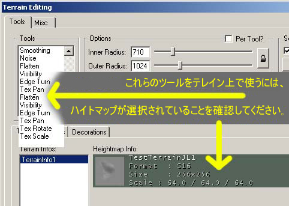
[Terrain Editing] （テレインの編集） ウィンドウで [Terrains] （テレイン） タブを選択し、[HeightMap] （ハイト マップ） が選択されていることを確認してください（周囲は緑または灰色がかった色をしています）。これによりレイヤーの AlphaChannel (アルファ チャンネル) ではなく TerrainMap （テレイン マップ) の編集が可能になります｡これ以後は各ツールがテレインにどのように作用するかの説明になりますが、その前に TerrainMap が 16 ビットに変換されているか確認してください｡まだの場合はウィンドウの該当箇所で右クリックしてください｡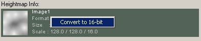
8 ビットのハイトマップはテレインにぎざついた効果を与えますが、16 ビットの場合、そして [Smooth] （スムーズ） ツールを使った後はよりスムーズになります。
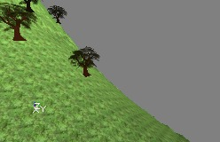
Vertex Editing （頂点の編集）
このツールを選択すると、マウスのカーソルが真中に赤い点のある２つの黄色い円に変わります｡黄色い円はブラシを意味します｡[Terrain Editing] ウィンドウでは半径を２つ設定できます。これは、[Inner Radius] （内側の半径） と [Outer Radius] （外側の半径）です。ブラシの内側にいくほど強く、外側はより柔らかくなっています｡[Strength （%）] （強さ） の値によりブラシの強さが決まりますが、この値は内側ブラシの強さとなります｡よって外側の強さは弱くなります｡中心から離れるほど、強さも弱まります｡ [Top] （トップ） ビューまたは [3D] ビュー内のテレインのいずれかの場所でマウスの左右どちらかのボタンをクリックすると、頂点を選択できます（何度かトライする必要がある場合があります）。ブラシによって、頂点を様々な強さに選択できます｡白の頂点が最も強く、黒の頂点が最も柔らかいものです｡ブラシの内側の黄色い円の中にある頂点はすべて白です｡外側の円の中のものはより中心から離れており、より柔らかくなっています｡これは [Soft Selection] （柔軟性の選択） が [Automatic] （自動） になっている場合にのみ作動するので、このオプションが有効になっていることを確認してください｡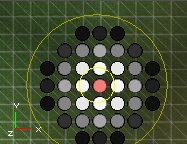
[Terrain Editing] ウィンドウの [Options] （オプション） で、内側および外側の黄色い円の半径を変更できます｡例えば内側の半径を 512、外側の半径を 2048 に設定すると、ブラシは下のように見えます： [Options] （オプション） では、ブラシの [Strength] （強さ） も設定できます｡例えば 50 に設定すると、より柔らかくなります：
[Options] （オプション） では、ブラシの [Strength] （強さ） も設定できます｡例えば 50 に設定すると、より柔らかくなります：
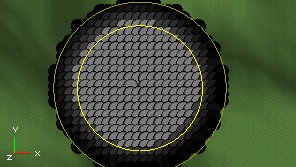
[CTRL] キーを押さえると、複数箇所を一度に選択できます｡ただし、柔軟性を自動選択するため、それ以前に選択した円はすべて大きくなります。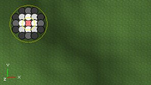

 [Terrain Editing] ウィンドウ内の [Soft Selection] （柔軟性の選択） で [Automatic Soft Selection] （自動柔軟性の選択） を無効にすると、ブラシのサイズに関係なく頂点は一度に１つしか選択できません｡[CTRL] キーを押しながら複数の頂点を選択したり、前に選択したものを選択解除することができます｡頂点の強さは [Strength （%）] （強さ） の値のみに依存しています。
[Terrain Editing] ウィンドウ内の [Soft Selection] （柔軟性の選択） で [Automatic Soft Selection] （自動柔軟性の選択） を無効にすると、ブラシのサイズに関係なく頂点は一度に１つしか選択できません｡[CTRL] キーを押しながら複数の頂点を選択したり、前に選択したものを選択解除することができます｡頂点の強さは [Strength （%）] （強さ） の値のみに依存しています。
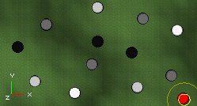
ここで [Soft Selection] の [Soft] （ソフト） ボタンを押すと、このようになります。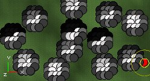
[Select] （選択） ボタンで選択したパーツの半径と強さは、ブラシの半径を変更する際に使うものと同じスライダーで決定します｡[Soft Selection] の目的は、尖った峰ではなく柔らかい線の丘を作成することです｡ 頂点を選択する理由は、これを持ち上げたり低くしたりして、テレイン上に丘や窪みを作成できるからです｡頂点をいくつか選択したら、[CTRL] キーとマウスのボタン両方を押さえ、マウスをドラッグします｡白の頂点は黒や灰色の頂点と比べはるかに早く上下します｡１ 番目のスクリーンショットでは硬く設定された白の頂点を持ち上げ、2 番目のスクリーンショットでは柔らかく設定された黒と灰色の頂点を持ち上げて、スムーズな丘を形成しています｡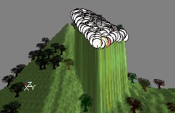
 テレインを高くしたり低くしたりする場合は、まず両方のマウス ボタンを押さえてから [CTRL] キーを押します｡そうしない場合エディタは、ユーザーが選択を拡張しようとしていると推測してしまいます。
注：３D ビューでは選択がうまくいかない場合、トップ ビューで同じ動作をしてみてください｡キーボードの「t」を押すと、その場所のテレインを表示します｡
テレインを高くしたり低くしたりする場合は、まず両方のマウス ボタンを押さえてから [CTRL] キーを押します｡そうしない場合エディタは、ユーザーが選択を拡張しようとしていると推測してしまいます。
注：３D ビューでは選択がうまくいかない場合、トップ ビューで同じ動作をしてみてください｡キーボードの「t」を押すと、その場所のテレインを表示します｡
Select （選択)
このツールを使うとテレインを矩形で範囲指定できます｡[CTRL] とマウスの左ボタンを押さえ、マウスをドラッグして選択します｡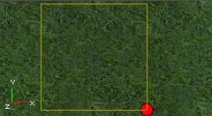
ボックスをマウスの右ボタンでドラッグすると、コーナーの １ つが自動的にテレインの中心に配置されます｡この選択方法は、後に [Terrain Generator] （テレイン ジェネレータ） で便利です｡Painting （ペインティング）
[Painting] （ペインティング） ツールを使うと、テレインをペイントして高くしたり低くしたり出来ます｡[CTRL] とマウスの左ボタンを押さえ、マウスをテレイン上に移動してそれらの箇所を高くします。
 マウスの右ボタンを使うと、テレインを低く出来ます：
マウスの右ボタンを使うと、テレインを低く出来ます：
 [Terrain Editing] ウィンドウの [Adjust] （調整） および [Strength （%）] （強さ） オプションを使うと、ブラシを強くも柔らかくも出来ます｡例えば [Adjust] （補正） が 5 の場合、期待する効果を得るのに 50 の場合に比べずっと長くペイントしなければなりません｡峰のサイズはブラシのサイズによるため、内側および外側の半径値で決定できます｡
[Terrain Editing] ウィンドウの [Adjust] （調整） および [Strength （%）] （強さ） オプションを使うと、ブラシを強くも柔らかくも出来ます｡例えば [Adjust] （補正） が 5 の場合、期待する効果を得るのに 50 の場合に比べずっと長くペイントしなければなりません｡峰のサイズはブラシのサイズによるため、内側および外側の半径値で決定できます｡
Color (カラー）
このツールは[装飾レイヤー]のみで、TerrainMap （テレイン マップ) では使えません｡詳細は CreatingDecoLayers (装飾レイヤーの作成) を参照してください｡Smoothing (スムージング)
[CTRL] とマウスのボタンを押さえてブラシを尖った峰の上やぎざぎざの箇所の上へ移動すると、それらをスムーズにすることができます。
[Adjust] および [Strength （%）] オプションにより、効果の程度を調節します｡
Noise (ノイズ)
[CTRL] といずれかのマウス ボタンを押してブラシをテレインの上にドラッグすると、テレイン上にノイズをランダムに作成できます｡[Adjust] （補正） の値が大きいほど、高低に差がつきます｡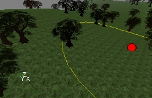
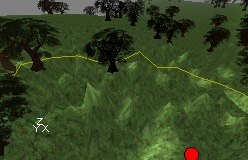
Flatten (フラット化)
[CTRL] とマウス ボタンを押してペイントを始めると、マウスで触れた場所がすべて開始した場所と同じ高さになります｡これによりテレインがフラットになります。高い場所から始めると高原を作成し、低い場所から始めると谷を作成します。
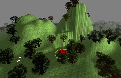

Visibility （可視性）
可視性レイヤーは余分な １ ビット レイヤーで、可視または不可視です｡テレインの一部を不可視にするには [Visibility] ツールを使います｡不可視の部分はその場所のすべてのレイヤーを不可視にし、その上、非ソリッドです（貫通が可能）。このフィーチャーのもっとも重要な用途は、プレーヤーに地下や洞窟などテレインの下へ行かせたい場合です｡ [CTRL] とマウスの右ボタンを使ってテレインを不可視にし、[CTRL] と左ボタンを使って不可視の部分を可視に戻します｡
 不可視の部分の側面がブロック状になるので、ノーマルまたはハードウェアのブラシを使って隠します｡例えば山の中に洞窟を作る場合、まず山の側面に穴を作り、プレーヤーが山の中へ歩いて行けるようにします｡
不可視の部分の側面がブロック状になるので、ノーマルまたはハードウェアのブラシを使って隠します｡例えば山の中に洞窟を作る場合、まず山の側面に穴を作り、プレーヤーが山の中へ歩いて行けるようにします｡
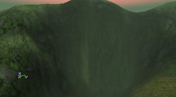
 次にプレーヤーは TerrainMap の下へ向かいます｡プレーヤーが立つためにノーマルまたはハードウェア ブラシ、または他のテレインが必要です｡また、もしテレインの下にいて上を見上げた場合テレインは見えません：そのサーフェスは片面しかないため、壁や天井を作る必要があります｡このスクリーンショットには、プレーヤーをテレインに不可視で非ソリッドの別の穴が存在するマップ上の他の場所へと導く長い洞穴を作成するため、多くの静的メッシュが追加されています。２番目のスクリーンショットは外へ続く洞穴の内部を表示しています｡
次にプレーヤーは TerrainMap の下へ向かいます｡プレーヤーが立つためにノーマルまたはハードウェア ブラシ、または他のテレインが必要です｡また、もしテレインの下にいて上を見上げた場合テレインは見えません：そのサーフェスは片面しかないため、壁や天井を作る必要があります｡このスクリーンショットには、プレーヤーをテレインに不可視で非ソリッドの別の穴が存在するマップ上の他の場所へと導く長い洞穴を作成するため、多くの静的メッシュが追加されています。２番目のスクリーンショットは外へ続く洞穴の内部を表示しています｡

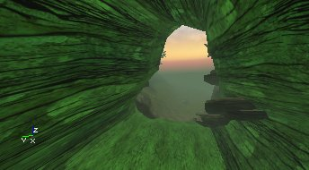
Edge Turn （エッジ ターン)
このツールは細部の修正のためのみで、テレインの仕上げのためだけに使用するものではありません｡つまり、テレイン内の各トライアングルをターンさせる機能です｡下のイメージは、切り立った坂をスムーズに変える使用例です｡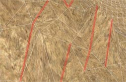
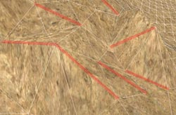
テレインにあるハイライトされたエッジが回転され、テレインが多少スムーズになったことが分かります｡[Edge Turn] （エッジの回転） ツールの効果の半径は表示されていませんが、[Outer Radius] （外側の半径） のスライダーで変更できます｡最終変更によってツールのコントロールを最大にするには、[Outer Radius] のスライダーを１まで落としておくことが最も望ましいでしょう。[GridOptions] （グリッド オプション） ボタンを使ってテレイン グリッドをオンにしておくのも、良い方法です｡